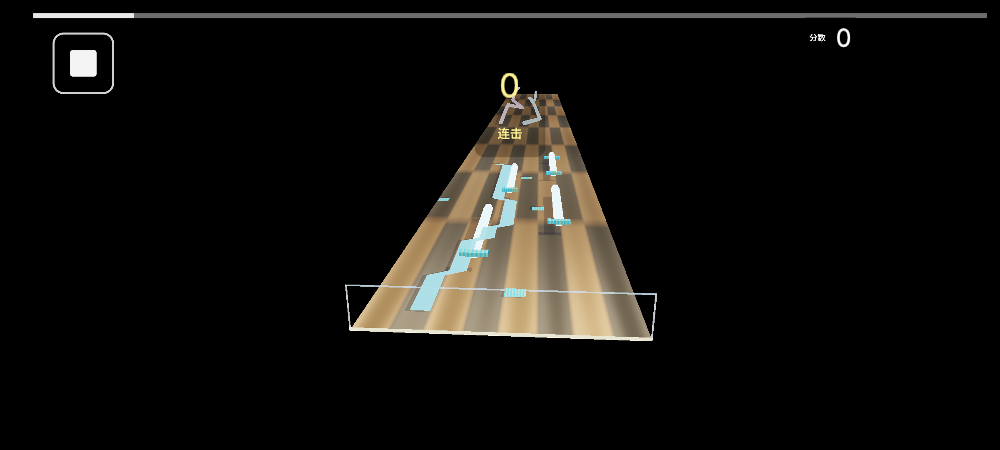
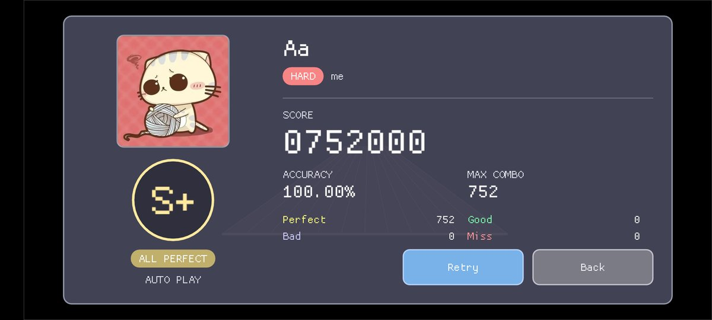

Music Game Engine
Engineering challenges
Tile-local HDR and memory bandwidth
The original path wrote a 2400 × 1080 RGBA16F image (20.7 MB) to external memory and read it back for display conversion. Reading it inside the same GPU tile reduced mean external bandwidth from 5.13 to 0.33 GB/s. Both paths presented 119.4–119.5 FPS across the four runs.
Galaxy S21 (Mali-G78) · Drop 3D / Hard · song fixed at 1.3 s · 120 Hz · GPU frequency unlocked Run Conversion path Presented FPS External I/O (GB/s) 1 Store and reload 119.5 5.1315 2 Tile-local conversion 119.5 0.3301 3 Tile-local conversion 119.4 0.3277 4 Store and reload 119.4 5.1275 Song and scene time were fixed. Reversing the run order checked whether the result persisted at normal presentation pacing while reading Mali hardware counters. In the 90° landscape comparison, score, progress bar and pause-button regions matched pixel for pixel. The site shows previews. Pixel differences were computed from the original captures.

Galaxy S21 · original HDR store and reload 
Same scene · tile-local HDR read, followed by the HUD Cross-lane hold-head misalignment
The active head now follows the hold path’s intersection with the judgment line. At 17.625 s its desktop centre moved from 614.5 to 719.5 px against a target of 720.0. On the S21 both lane changes registered all four checkpoints and the tail.
The same autoplay run was frozen at 17.625 s on Windows at 1440 × 810. At row 737, the projected judgment line, the midpoint of the cyan head strip gives its horizontal centre. The S21 input test injected one finger along the entire path until the tail scored at 21.000 s.

Before · the path has moved but the cyan head stays to its left 
After · at the same instant, the cyan head meets the path at the judgment line Scan-line misalignment after tempo changes
At 106.65 s the chart changed from 89.6 to 134.8 BPM. The runtime kept the opening tempo. Editor and player now build their page schedule from the same tempo map and page settings. The Windows frames show the same row-401 note at 107.32 s.
Two other instants in the same song tested scope. At 149.96 s in a later tempo section, the line moved from about row 710 to rows 62–64, crossing the row-64 note. At 19.96 s, before the first tempo change, the control frame was pixel-identical.

Before · scan line on rows 671–673 
After · scan line on rows 399–401 Frame presentation delays at 120 Hz on the S21
Prewarming Circle’s point-light pipeline removed a 73.696 ms first-use stall. For the remaining misses, buffer IDs linked queueing, GPU completion, compositor latch and presentation.
On the S21, 9 / 57,639 intervals exceeded 12.50 ms at 120 Hz. In all 9, the next buffer was GPU-ready 9.38–12.76 ms before the previous image appeared. SurfaceFlinger latched it before the target refresh and missed its CPU deadline. At 60 Hz, 0 / 5,763 exceeded 25 ms.
One S21 ran four Studio / Hard charts at Standard quality with real audio. Consecutive game-buffer IDs joined the Perfetto and SurfaceFlinger records. The traces localise the delay to the compositor stage. Separating driver, scheduler and display-hardware contributions would require different measurements.
Vulkan resource lifetime and Android resume crashes
A texture outlived its Vulkan device, replacing a results cover with the font atlas. After that fix, the fourth resume from pause still crashed. Its descriptor-binding stack led to a stale batch-renderer cache. Clearing it yielded 100/100 matching resumes across five screens.
The batch renderer keyed descriptor sets by image-view handle. After the device was recreated, a new view could receive the same handle value and retrieve a set from a destroyed pool. Device shutdown now clears the cache. The retest covered title, song selection, settings, pause and results.

S21 results screen · the font atlas appeared in place of cover art on return 
Same screen · correct cover after the twentieth resume with the fix